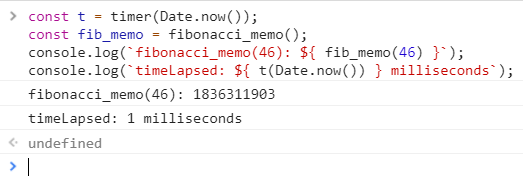
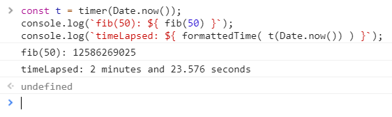
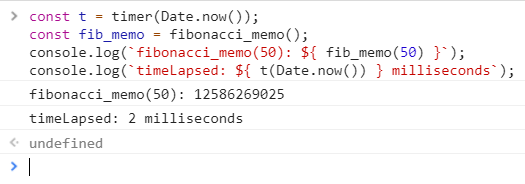
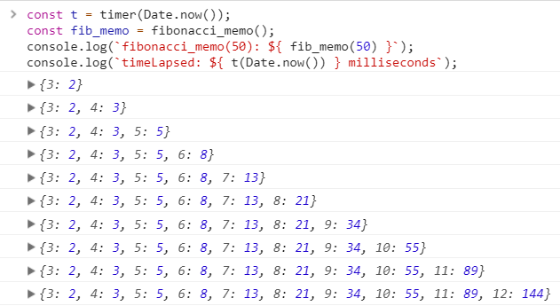

JavaScript Fibonacci Memoization
I wanted to write a blog post but wasn’t sure what to write about. Well, I’ve been working a lot with JavaScript lately and have been loving it. I come from a background of mostly C and Java with a dash of Python 😉. Passing functions as arguments and returning functions is all very new for me so I was considering writing about first-class functions, higher-order functions and/or closures. These are all brand-new concepts for me.
Well I started researching online and watching a few videos on YouTube. After a while I was feeling comfortable with what I learned so I decided to create an implementation of Fibonacci.
I will not delve into the details of Fibonacci numbers but there were two concepts I knew right off the bat I wanted to incorporate into the solution. The first was recursion. The second was closures, although I had no idea how I was going to implement the latter with Fibonacci.
Before I started developing the solution I decided that I wanted to have some sort of timer to capture the duration of the solution. Fibonacci executes a lot of recursive calls and a lot of redundant calculations making it very slow when trying to calculate higher numbers.
The following is what I came up with for timer.
A higher order function returning another function. The function to be timed in this case is Fibonacci. The higher-order function, timer, is to be called just before the execution of Fibonacci. The returned function is to be executed on the completion of Fibonacci. The anonymous function returned also carries a record of the context in which it was created, in this case the variable startTime. This anonymous function along with the context make up a closure.
The following is what I used to report my findings.
A basic function that receives the time clocked in milliseconds, it converts those milliseconds to minutes and seconds and returns them as a string.
Here is the Fibonacci function I came up with.
Nothing ground breaking here.
When I tested that solution I thought maybe something was wrong with my function. My console wasn’t giving me a result. A few minutes later I ran the solution and walked away from my laptop for a while when I returned there was the solution in the console.
This got me thinking about memoization. Memoization is the caching of results from expensive calculations to avoid remaking those same calculations. This works great for something like Fibonacci because the recursive calls can become very taxing, timewise.
I knew an object would be perfect for this, the key could be n and the value could be f(n). However, I didn’t want to pollute the global scope. By now it was getting late in the evening and I decided to call it a night. I woke up at around 3am and couldn’t go back to sleep. Then I started thinking about the problem from the night before and it finally clicked. The solution was exactly what I was looking at the day before, closures.
The following is the solution I came up with the following morning.
On every iteration the object, memo, is searched for the key, n, if the key is found the value associated with the key is returned. This negates the need for any unnecessary recursive calls. Every value is calculated once and cached in the object.
I decided to put this to the test and see if there was any significant difference between the solutions.
The outcome was astounding!
The following is what I ran in the console for the non-memoized solution.
Okay, 29 and a half seconds, not bad.
The following is what I ran for the memoized solution.
Yep, 1 millisecond!
I had to omit the call to formatted_time() because there were no minutes or seconds to format!
I was in disbelief, I decided to increase the value of n to 50 just to see how much of a difference it would make.
Here is the non-memoized solution.
Wow! As you can see the time lapsed seems to increase exponentially.
Here is the memoized solution running 50 as the value of n.
2 milliseconds!
Here is a visual representation of what is happening on every iteration an initial calculation is made.
The programs sees that a calculation hasn’t been made for the value n, the program executes the calculations and the outcome is cached as a key value pair.
That is just up to number 12. This object gets big fast.
The benefits of memoization are obvious. It would be nice to find a use for this other than experimentation. I have read that some languages feature automatic memoization which can be leveraged by the developer. I’m not sure if JavaScript is one of those languages but that’ll have to be a topic for another day.